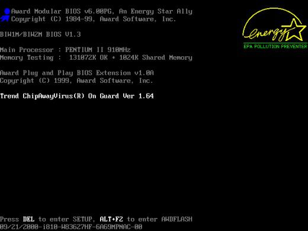

O botão de energia é basicamente um interruptor, permitindo a entrada da corrente elétrica para os componentes da máquina.
permite a entrada de energia, que passa pela fonte de alimentação, passando pelas conversões necessárias, até chegar a todos os componentes com a voltagem correta. O que acontece então?
A BIOS (Basic Input/Output System) entra em ação. Quer dizer, isso em computadores mais antigos, já que grande parte das máquinas atuais trazem o UEFI (Unified Extensible Firmware Interface), mas que muitos fabricantes chamam (assim como muitos usuários) ainda de BIOS.